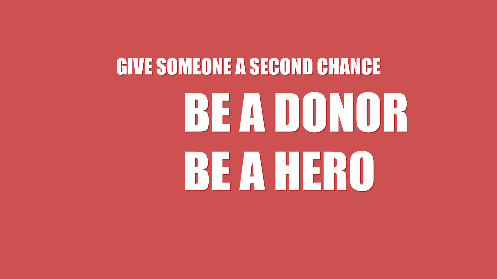

How to apply
When you have decided whether to be an organ donor or not, you can communicate your decision in three ways. You can:
Written
• Fill in a donor card
• Register in the Danish Organ Donor Registry
Verbally
• Tell your closest relatives about your decision.
You can change your registration in the Donor Register as many times as you like. Everybody above 18 years of age with a Danish civil registration number can register in the Danish Donor Registry or fill in a donor card. If you register in the Danish Donor Registry you do not need to fill in a donor card.
Written
• Fill in a donor card
• Register in the Danish Organ Donor Registry
Verbally
• Tell your closest relatives about your decision.
You can change your registration in the Donor Register as many times as you like. Everybody above 18 years of age with a Danish civil registration number can register in the Danish Donor Registry or fill in a donor card. If you register in the Danish Donor Registry you do not need to fill in a donor card.
